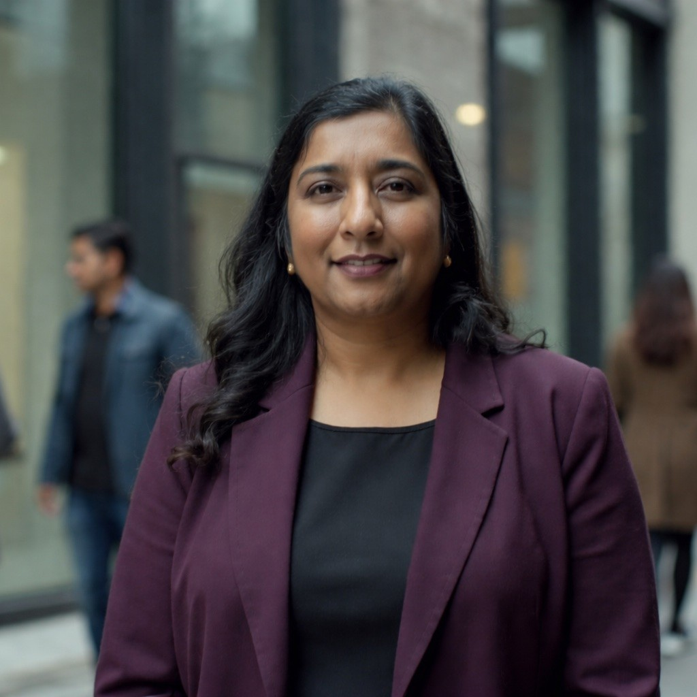

An executive sprint that turns AI strategy conversations into a governance structure, decision rights, and a 90-day execution plan your team can run without outside help.
Facilitated by an operator who's built operating models across manufacturing, electronics, robotics, and software. Not a consultant who studied them.
91% of mid-market companies are using AI in some form. But only 25% have it integrated into core operations. The rest are stuck: tools purchased, pilots launched, board questions asked, nobody owning the structure that turns activity into results.
Nobody disagrees that AI matters. But nobody owns the decisions, nobody built the governance, and nobody defined how AI work gets evaluated, approved, and executed inside your specific company.
"We bought Copilot licenses and nobody uses them."
"We had an offsite about AI and came back with a slide deck that's collecting dust."
"Three departments bought three different AI tools and none of them talk to each other."
"We wanted to try a pilot and it was a mess. Nobody knew who owned what and we couldn't figure out how to navigate security."
Most AI strategy consultants come from management consulting or big tech. Neither background prepares you for building an operating model inside a $200M company where the CEO, COO, and CFO need to agree before anything moves.
Comes from McKinsey, BCG, or a big tech AI team
Has analyzed operating models from the outside
Delivers a framework and a slide deck
Leaves before implementation starts
Benchmarks you against Fortune 500 patterns
Facilitated by someone who's held VP roles across manufacturing, electronics, robotics, and software
Has built operating models that survived FDA audits, product recalls, and global supply chains
Builds the model with your team in the room, not for them
Includes a handoff to the person who runs it after
Benchmarks you against 966 mid-market companies your size (RSM 2025)
A 90-minute working session that classifies your problem, maps where AI decisions are (and aren't) being made across your org, and benchmarks you against mid-market companies that are succeeding.
You walk away with a one-page visual canvas you can pull up in board meetings for the next six months. Not a maturity score. Not a PDF. A tool.

18 years as an operator building products and operating models in regulated industries. I've sat in the rooms where AI adoption stalls, where leadership teams talk past each other, and where good technology dies because nobody built the organizational structure to support it.
I'm not a consultant who studied AI strategy. I'm an operator who built it, broke it, fixed it, and shipped it. Across healthcare, manufacturing, electronics, surgical robotics, and government.
A pre-session questionnaire, company research before you arrive, a 90-minute working session, and a one-page canvas you can use for the next six months.
Book the Signal Check